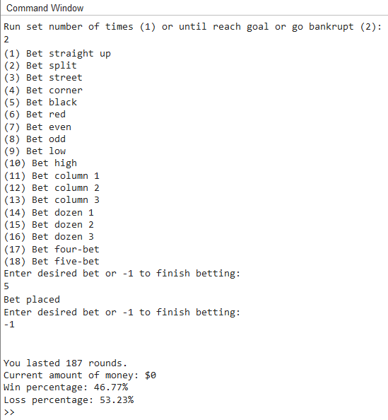
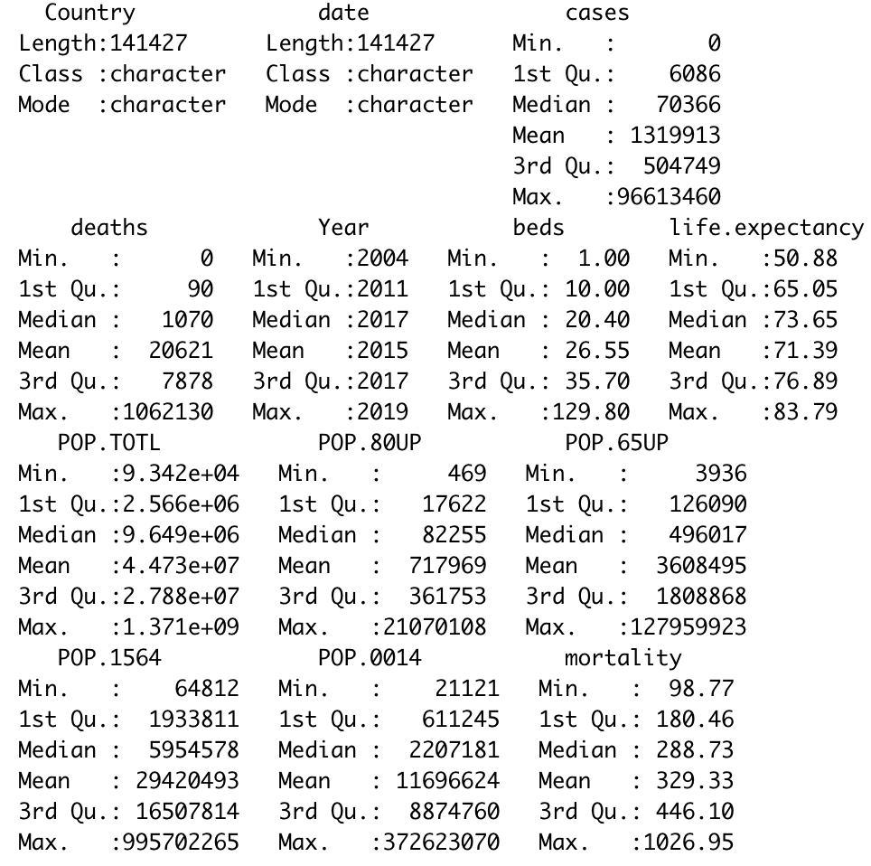
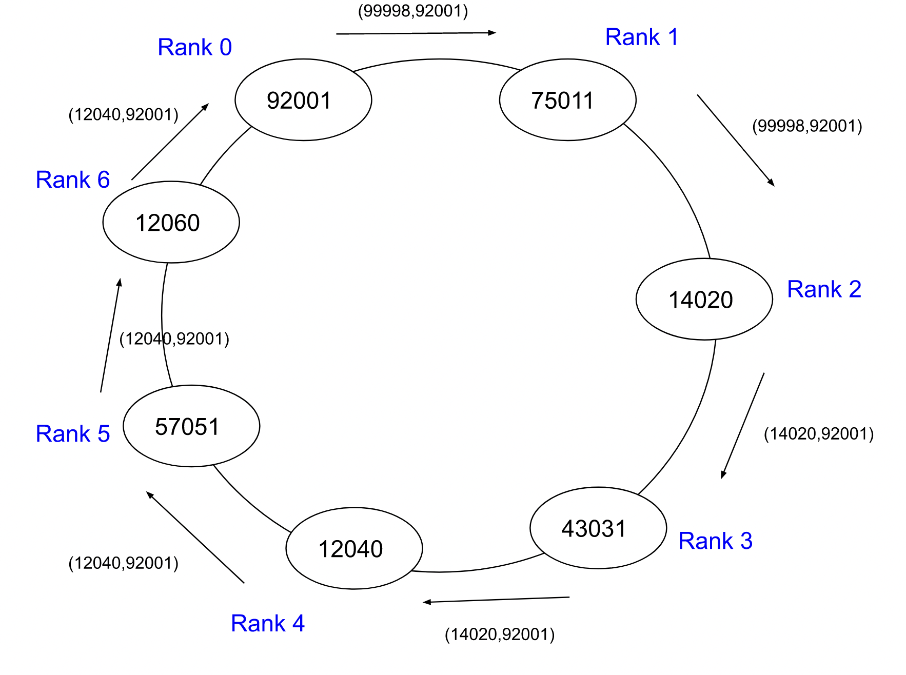

Roulette Simulator

Roulette is a classic game of chance found in casinos and other gambling venues all across the world.
Given its multitude of variables in regards to player input, along with potential for high stakes, it is
no wonder there has been much study on the game by statisticians and the like.
This program uses MATLAB to simulate a game of roulette, either by playing with the same bet one
thousand times and seeing the profit or until a player goes bankrupt.
It asks for player input on how they would want to play, ask what types of bets they wish to place,
and the output will give the win percentage, how much “profit” was potentially made, how many rounds
they lasted, and gives a graph as a visual for the win-loss ratio.
Roulette Simulator GitHub Repo
Covid-19 Death Rate Analysis

One of the questions during the Covid-19 pandemic was why different countries have such different
proportions of deaths relative to the number of disease cases.
There were several hypotheses about this, including differences in medical facilities (countries with more hospitals should see fewer deaths), age
demographics (countries with a larger proportion of older people will see more deaths), and existing
mortality rates between countries (indicating pre-existing differences in overall health between
countries).
The goal of this project was to use linear modeling to quantify some of the variation in mortality from
Covid-19 in different counties due to differences in hospital infrastructure and demographics.
It uses R to wrangle data taken from multiple sources and builds linear models to determine what independent variables cause the most variance.
Analysis GitHub Repo
Parallel and High Performance Computing Projects

These projects include functions that are commonly used in parallel and distributed computing.
The leader election algorithm will elect a single node and give it special powers within the distributed
system.
This allows the selected node to coordinate the nodes in the distributed system, assign work, and
complete operations that don't require the other nodes by itself.
This can be useful for improving efficiency, reducing needed coordination, and simplifying tasks.
Clustering algorithms are among the most commonly used in unsupervised learning. The k-means algorithm
in particular is especially popular because it is rather easy to apply towards even large data sets.
It aims to partition n observations into k clusters where each observation will belong to the cluster
with the nearest mean.
These projects are written in C++ and uses MPI for message passing.